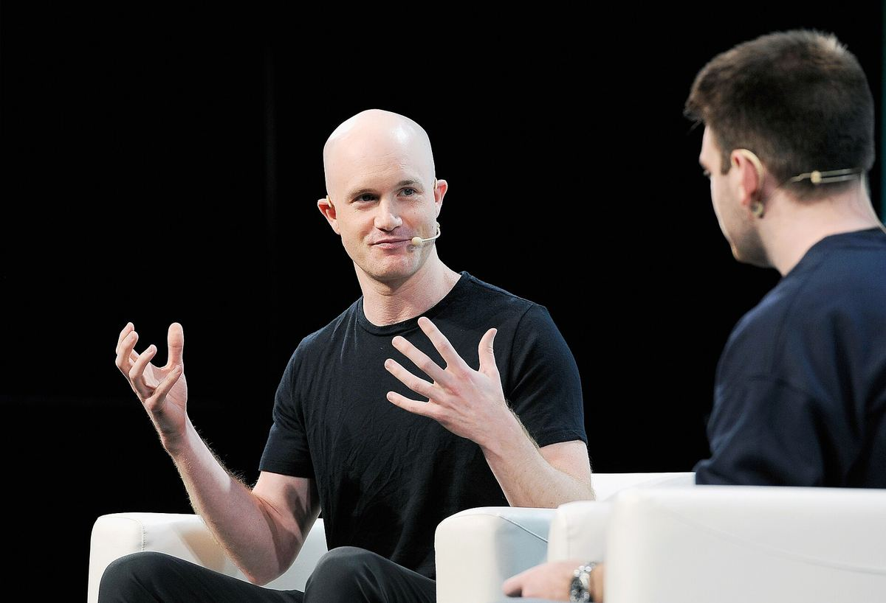

Coinbase resmi kantongi piagam trust bank nasional penuh dari regulator bank AS (OCC)Coinbase officially secures a full national trust bank charter from US bank regulator OCC
OCC menyetujui piagam penuh Coinbase National Trust Company pada 6 November 2026. Coinbase kini bisa menjalankan layanan kustodi aset digital untuk institusi di bawah pengawasan federal AS.The OCC approved the full charter of Coinbase National Trust Company on 6 November 2026. Coinbase can now run digital asset custody services for institutions under US federal supervision.

Poin utamaKey points
- Menurut catatan resmi OCC, piagam Coinbase National Trust Company berstatus "Consummated/Effective" pada 6 November 2026, setelah disetujui bersyarat pada 2 April 2026. Coinbase mengumumkannya pada 9 November.
- Piagam trust nasional ini memungkinkan layanan kustodi dan pembayaran yang diawasi federal, tetapi bukan bank umum yang menerima simpanan dan menyalurkan kredit, menurut CoinDesk.
- Menurut Coinbase, bisnis kustodi yang ada saat ini akan dipindahkan dari Coinbase Custody Trust Company (diawasi regulator New York, NYDFS) ke entitas baru ini secara bertahap.
- CoinDesk mencatat bulan lalu OCC juga memberi piagam trust penuh ke Ripple.
- Asosiasi bank komunitas AS (ICBA) menggugat OCC karena menilai pemberian piagam trust ke perusahaan crypto melampaui kewenangannya, menurut CoinDesk.
- According to official OCC records, the Coinbase National Trust Company charter became "Consummated/Effective" on 6 November 2026, after conditional approval on 2 April 2026. Coinbase announced it on 9 November.
- This national trust charter allows federally supervised custody and payment services, but it is not a full-service bank that takes deposits and extends loans, according to CoinDesk.
- According to Coinbase, its existing custody business will be moved gradually from Coinbase Custody Trust Company (supervised by New York regulator NYDFS) to the new entity.
- CoinDesk noted that last month the OCC also granted Ripple a full trust charter.
- The US community bankers' association (ICBA) has sued the OCC, arguing that granting trust charters to crypto firms exceeds its authority, according to CoinDesk.
Coinbase, exchange crypto terbesar di AS, kini resmi mengoperasikan trust bank nasional. Kantor Pengawas Mata Uang AS (Office of the Comptroller of the Currency/OCC) menyetujui piagam penuh Coinbase National Trust Company (CNTC). Menurut catatan Corporate Applications Search di situs OCC, permohonan diterima 3 Oktober 2025, disetujui bersyarat 2 April 2026, dan berstatus "Consummated/Effective" pada 6 November 2026.
Coinbase mengumumkan persetujuan itu lewat blog resminya pada Senin (9/11/2026). Perusahaan menyebut piagam ini memungkinkan bisnis kustodinya berkembang di bawah kerangka regulasi federal. Coinbase juga menyebut dirinya sebagai kustodian crypto terbesar di dunia.
Menurut CoinDesk, piagam trust nasional memungkinkan layanan kustodi dan pembayaran yang diawasi federal, tetapi tidak menjadikan Coinbase bank umum yang menerima simpanan dan memberi pinjaman.
Coinbase sebelumnya menjalankan kustodi lewat Coinbase Custody Trust Company, perusahaan trust terbatas yang diawasi Departemen Layanan Keuangan New York (NYDFS) sejak 2018. Menurut blog Coinbase, kegiatan trust tersebut kini dibawa ke kerangka federal dengan tetap berpijak pada fondasi yang dibangun bersama NYDFS.
Wakil Ketua Coinbase Ryan VanGrack, dalam pernyataan yang dikutip CoinDesk, menyebut persetujuan OCC sebagai langkah besar lain dalam mengintegrasikan aset digital ke infrastruktur inti sistem keuangan Amerika.
CoinDesk mencatat Coinbase bukan satu-satunya. Bulan lalu OCC memberi piagam trust penuh ke Ripple. Di sisi lain, Independent Community Bankers of America (ICBA) menggugat OCC karena menilai pemberian piagam trust ke perusahaan crypto melampaui kewenangan regulator itu.
Coinbase, the largest US crypto exchange, now officially operates a national trust bank. The Office of the Comptroller of the Currency (OCC) approved the full charter of Coinbase National Trust Company (CNTC). According to the Corporate Applications Search records on the OCC website, the application was received on 3 October 2025, conditionally approved on 2 April 2026, and became "Consummated/Effective" on 6 November 2026.
Coinbase announced the approval on its official blog on Monday (9/11/2026). The company said the charter allows its custody business to expand under a federal regulatory framework. Coinbase also described itself as the largest crypto custodian in the world.
According to CoinDesk, a national trust charter allows federally supervised custody and payment services, but does not make Coinbase a full-service bank that takes deposits and makes loans.
Coinbase previously ran custody through Coinbase Custody Trust Company, a limited-purpose trust company supervised by the New York Department of Financial Services (NYDFS) since 2018. According to Coinbase's blog, those trust activities are now being brought into a federal framework while building on the foundation developed with NYDFS.
Coinbase Vice Chairman Ryan VanGrack, in a statement cited by CoinDesk, called the OCC approval another major step in integrating digital assets into the core infrastructure of the American financial system.
CoinDesk noted Coinbase is not alone. Last month the OCC granted Ripple a full trust charter. Meanwhile, the Independent Community Bankers of America (ICBA) has sued the OCC, arguing that granting trust charters to crypto firms exceeds the regulator's authority.
Kenapa pentingWhy it matters
Status ini menempatkan kustodi crypto Coinbase, yang dipakai banyak institusi besar, di bawah pengawasan regulator perbankan federal AS. Ini salah satu tanda makin dalamnya integrasi aset digital ke sistem keuangan tradisional AS.This status puts Coinbase's crypto custody, used by many large institutions, under the supervision of a US federal banking regulator. It is one sign of the deepening integration of digital assets into the traditional US financial system.
Foto: Brian Armstrong, CEO Coinbase, di TechCrunch Disrupt 2018 (TechCrunch, CC BY 2.0, Wikimedia Commons). Foto ilustrasi.Photo: Brian Armstrong, CEO of Coinbase, at TechCrunch Disrupt 2018 (TechCrunch, CC BY 2.0, Wikimedia Commons). Illustrative photo.
SumberSources
- Coinbase: Coinbase launches National Trust Company with federally regulated, institutional-grade custody offering
- OCC: Corporate Applications Search, Coinbase National Trust Company
- CoinDesk: Coinbase gets full U.S. trust charter from federal banking regulator
Ikuti COIN BRO diFollow COIN BRO on Telegram
Dapatkan berita seperti ini lebih cepat di channel kami. Gratis.Get news like this faster on our channel. Free.
Bukan saran finansial. Artikel ini adalah informasi dan edukasi, bukan ajakan membeli atau menjual aset apa pun. Aset kripto berisiko tinggi. Fakta mengikuti sumber yang tercantum; bagian berlabel interpretasi adalah pendapat, bukan fakta. Menemukan kesalahan? Lihat kebijakan koreksi.Not financial advice. This article is information and education, not a solicitation to buy or sell any asset. Crypto assets are high risk. Facts follow the listed sources; sections labeled interpretation are opinion, not fact. Found an error? See our corrections policy.